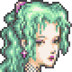
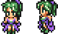
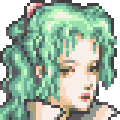
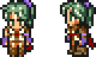
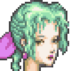
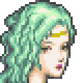
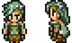

|
Silk Dress: Hybrid This costume is obtained in a treasure box in Maduin's House in the Eidolon World during the World of Ruin. It's a dress her mother, Madeline, made. The BGM played in the Falcon while wearing this costume is "Romancing Saga 3: Katalina's Theme". |


|
Bodhum Military Uniform: l'Cie To obtain this costume you must have completed her personal achievement "The Feeling of Love". The appearance used here is Lightning's model from Final Fantasy XIII. The BGM played in the Falcon while wearing this costume is "Final Fantasy XIII: March of the Dreadnoughts" |


|
Flower Seller's Dress: Cetra This costume is obtained once you've cleared the achievement "Character Master". The costume is designed after Aerith's dress from Final Fantasy VII. The BGM played in the Falcon while wearing this costume is "Final Fantasy VII: Aerith's Theme". |


|
Feymarch Bustier: Summoner To obtain this costume you must have unlocked the first 3 costumes for Terra and cleared the "Quest Achiever" achievement. This costume is designed from Rydia's dress in Final Fantasy IV. The BGM played in the Falcon while wearing this costume is "Final Fantasy IV: Rydia". |